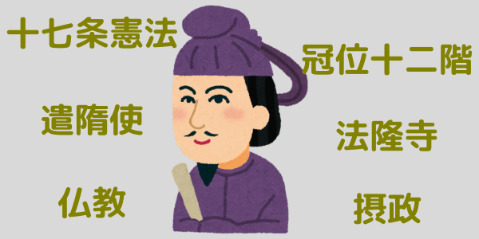
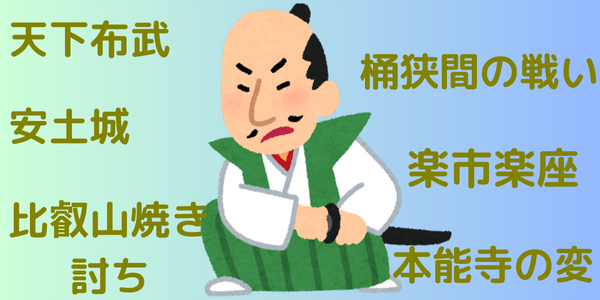
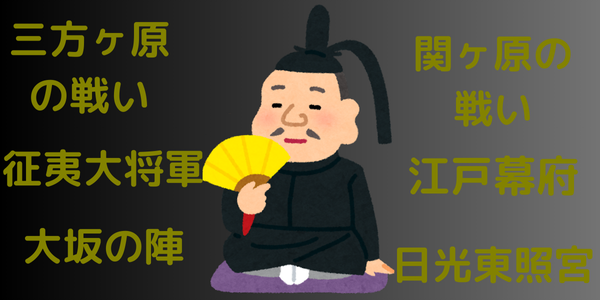

Japanese History
日本の歴史について紹介します

<聖徳太子>
聖徳太子は、飛鳥時代の日本における重要な政治・宗教的指導者で、推古天皇の摂政として十七条憲法の制定や冠位十二階の制度を導入し、政治体制を整えました。また、仏教の普及を推進し、法隆寺を創建するなど日本の仏教文化の基盤を築きました。さらに、遣隋使を派遣し、外交関係も強化しました。

<織田信長>
織田信長は天下布武を掲げ、桶狭間の戦いで今川義元を破り、勢力を拡大しました。安土城を築き、楽市楽座を実施して商業を活性化させる一方、比叡山焼き討ちなど強行な手段も用いました。彼の生涯は本能寺の変で終焉を迎えましたが、その確信的な制作と戦略は日本の歴史に大きな影響を与えました。

<徳川家康>
徳川家康は三方原の戦いで武田信玄に敗北を経験後、関ヶ原の戦いで勝利し、1603年に征夷大将軍として江戸幕府を開きました。江戸時代の平和な時代を築き、大阪の陣で豊臣家を滅ぼし、最終的に全国統一を果たしました。家康の死後、日光東照宮に神格化され、後世に大きな影響を与えました。